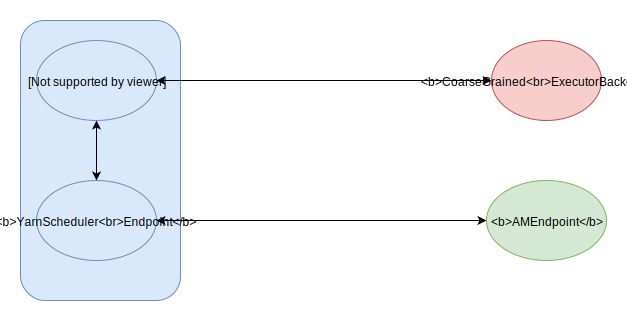

前言
为了更好的管理集群资源，一般都会有资源管理调度器，所有的服务都需要服从调度器的安排才能运行。Hadoop 集群内置了 Yarn 资源管理器，而 Spark 处理的数据一般存储在 Hadoop 里，所以 Spark 也支持运行在 Yarn 上面。本篇会介绍 Spark 是如何运行在 Yarn 上的。
Yarn 运行程序
Yarn 作为一个框架，包含了多个组件。如果想在 Yarn 上运行程序，需要先了解它的运行流程。
Spark Rpc 服务
Spark运行在Yarn上，会涉及到下列Rpc 服务
- YarnDriverEndpoint， 代表着 driver 端，它继承 DriverEndpoint， 负责分配任务和日志收集。
- CoarseGrainedExecutorBackend， 表示 Executor 进程，负责执行由 Driver 端分配的任务。
- YarnSchedulerEndpoint， DriverEndpoint 和 AMEndpoint沟通的桥梁
- AMEndpoint， 运行在 ApplicationMaster 进程上，主要负责 Yarn 的资源请求
注意到 YarnDriverEndpoint 和 YarnSchedulerEndpoint 总是运行在同一个进程里，这里简称为 driver 端。根据进程所在的位置，分为两种运行模式：
- client 模式，此进程运行在 Client。
- cluster 模式，此进程运行在 ApplicationMaster 。
ApplicationMaster 运行原理
AMEndpoint 启动
因为 ApplicationMaster 进程运行的所在 Container 是随机分配的，所以 driver 端并不知道 AMEndpoint 的地址。AMEndpoint 在启动之后，会主动发送自己的地址给 YarnSchedulerEndpoint，两者之间就可以通过顺利通信了。
client模式
client模式下，ApplicationMaster 进程仅仅运行 AMEndpoint 的服务。因为 driver 端服务在 Client 进程上，所以 AMEndpoint 必须远程请求。在启动 ApplicationMaster 进程时候，Spark 已经将 driver 端的地址，通过 Main 函数的参数传递过来了。AMEndpoint 会不停的重试连接driver 端，才会进行下一步操作。
cluster模式
cluster模式下，ApplicationMaster 进程运行多个服务，dirver 服务和 AMEndpoint 服务。ApplicationMaster 进程会先启动 driver 服务完成 SparkContext 的初始化后，才会启动 AMEndpoint 服务。
Container 启动
请求资源大小
AMEndpoint 启动后，当接收到了 driver 端的请求，就会向 ResourceManager 申请资源。每个 Executor 申请的资源分为 cpu 和内存大小两个方面：
CPU 的数量由配置项 spark.executor.cores 指定。
内存大小 = 堆内存 + 额外内存。堆内存由配置项spark.executor.memory指定。 额外内存由 spark.yarn.executor.memoryOverhead 配置项指定，如果没有指定，那么就取值为初始内存大小的 10%，但是大小必须大于 384MB。
|
|
这里需要注意下，Yarn 的资源分配有最小单位。假设 spark 申请的 container 资源为 初始内存 1GB + 额外内存 384MB，并且 Yarn 的最小单位为1GB，那么Yarn 会分配两个单位的资源，也就是2GB 的内存。所以我们在优化资源分配时，必须考虑到额外内存，避免内存的浪费（虽然多余的内存都会被用于本地内存，但是也许我们不会用到这么多本地内存）。关于为什么会需要额外内存，这和 jvm 内存模型有关，下面会详细介绍。
启动命令
负责生成命令的源码简略如下：
|
|
这里可以看到container的启动，是运行了 java 命令，启动类是org.apache.spark.executor.CoarseGrainedExecutorBackend，启动参数包含了 driver 端的地址，execuor id 等等，还指定了 jvm 运行参数。jvm 运行参数包括使用 server 模式的 gc 回收器，并且指定了堆的最大值为申请的初始内存。比如以上面的申请为例，它的堆最大值为1GB。
我们知道 jvm 运行时，将该进程的内存分为 jvm 管理的内存和不受管理的本地内存。而 jvm 管理的内存分为堆，栈等多块，其中很大部分是由堆占用，jvm 支持堆内存的大小限制。而本地内存不受 jvm 控制，它属于操作系统管理，操作系统一般不对进程使用的内存做限制，除非超过了物理机的容量。但是它受到 Yarn 的控制，如果进程用的内存超标，就会被 Yarn 杀死。
spark 申请的初始内存只被用在堆上，所以还需要额外内存来用于其他地方，比如 jvm 管理的栈，和本地内存。spark 会用到本地内存来存储数据，或接收远端传来的 shuffle 数据。所以当 shuffle 数据较大时，可能造成本地内存过大，造成被 Yarn 杀死。这时你可以看到一条日志，意思是让你提高额外内存的大小，其实也就是提高本地内存的原理。
executor 数量
spark 有个配置项spark.executor.instances可以设置 executor 的数量。ApplicationMaster 在申请 exector 资源时，会尽量让 executor 分配的 container 分布到对应的数据节点，这样允许它直接读取本地磁盘，避免了网络的开销。